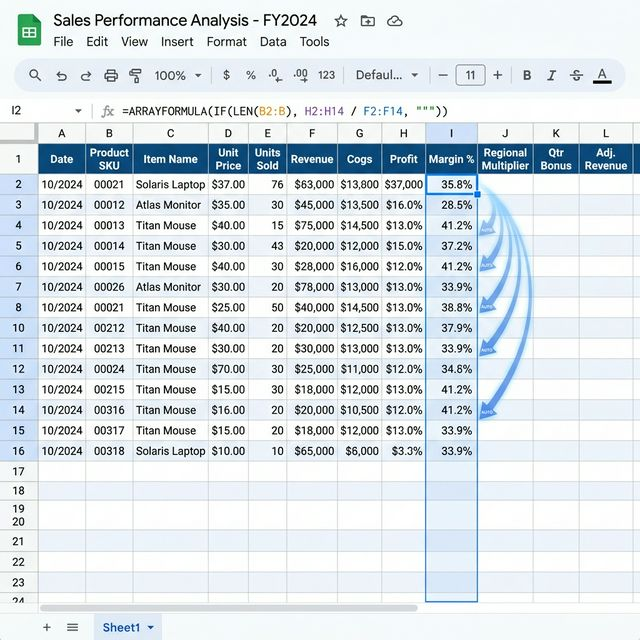

구글 스프레드시트에서 ARRAYFORMULA는 단일 셀이 아닌 범위를 대상으로 계산을 수행하고 그 결과를 여러 셀에 자동으로 뿌려주는 특수한 함수입니다. 일반적인 수식은
한 셀에 하나의 결과만을 내놓지만, 이 함수를 씌우는 순간 수식은 '범위 전체'를 인식하는 인격체로 변하게 되죠. 예를 들어 A2:A10 + B2:B10이라는 계산을
수행하면, 별도의 드래그 없이도 10개 행에 대한 결과가 한꺼번에 도출됩니다.
이 기능은 MS 엑셀의 동적 배열 수식(Dynamic Array)과 유사하지만, 구글 스프레드시트 특유의 클라우드 환경에서 더욱 빛을 발합니다. 특히 설문지 응답처럼 실시간으로 데이터가 추가되는
환경에서 ARRAYFORMULA는 필수 중의 필수입니다. 데이터가 101행, 1001행으로 늘어나더라도 사용자가 수식을 수정할 필요 없이 미리 정의된 범위 안에서 자동으로 결과값이 채워지기 때문입니다.
처음에는 생소할 수 있지만, 한 번 익숙해지면 '드래그'라는 행위 자체가 얼마나 비효율적이었는지 깨닫게 될 것입니다. 실무에서 이 함수를 자유자재로 다룬다는 것은 단순 입력을 넘어 '데이터 자동화
파이프라인'을 설계할 줄 아는 능력자로 인정받는 첫걸음입니다.
첫째는 데이터 무결성 유지입니다. 수식을 수천 행 아래로 복사하다 보면 중간에 실수로 수식이 지워지거나 변형되는 경우가 흔히 발생합니다. ARRAYFORMULA를 사용하면
최상단 셀(보통 제목 바로 아래) 딱 한 곳에만 수식이 존재하므로 관리 포인트가 획기적으로 줄어듭니다. 중간에 다른 사람이 데이터를 입력하려 해도 배열 수직이 차지하고 있는 영역이면 'REF!' 오류를
내뱉으며 수식 파괴를 방지하는 방패 역할까지 수행합니다.
둘째는 파일 속도 및 퍼포먼스 향상입니다. 수만 개의 셀에 개별적으로 수식이 박혀있는 파일과, 단 하나의 배열 수식으로 전체를 계산하는 파일은 처리 부하 면에서 큰 차이가
납니다. 특히 대용량 데이터를 다룰 때 브라우저가 버벅거리는 현상을 현저히 줄여줍니다. 셋째는 유연한 데이터 확장성입니다. 구글 폼(Google Forms)으로 받은
데이터에 수식을 적용할 때 일반 수식은 새로 들어온 행을 인식하지 못하지만, ARRAYFORMULA는 범위만 A2:A와 같이 열 전체로 설정해두면 새로운 데이터가 들어올
때마다 실시간으로 계산을 수행합니다. 이는 대시보드 자동화의 핵심 메커니즘이 됩니다.

한 줄의 수식으로 범위를 지배하는 ARRAYFORMULA 시각화 / AI 제작 이미지
가장 기본적인 활용은 열과 열을 곱하거나 더하는 산술 연산입니다. 예를 들어 B열에 단가가 있고 C열에 수량이 있다면, 합계를 구할 때 우리는 보통 D2 셀에
=B2*C2를 입력하고 수천 행을 드래그합니다. 이를 ARRAYFORMULA로 바꾸면 다음과 같습니다.
이 수식을 D2 셀에 한 번만 입력하면, B열과 C열에 데이터가 있는 모든 행에 대해 즉시 계산 결과가 출력됩니다. 여기서 주의할 점은 범위의 크기가 서로 일치해야 한다는 것입니다. B열은
100행까지인데 C열은 50행까지만 지정하면 오류가 발생하거나 예상치 못한 결과가 나올 수 있습니다. 실무에서는 데이터가 몇 행까지 늘어날지 모르는 경우가 많으므로 "B2:B *
C2:C"처럼 끝 번호를 생략하여 열 전체를 대상으로 설정하는 기법을 주로 사용합니다. 이렇게 하면 나중에 1,000번째 행에 데이터가 입력되어도 합계는 자동으로 계산됩니다.
배열 수식의 진가는 조건문과 만났을 때 더욱 강력해집니다. 특정 점수 이상이면 '합격', 아니면 '불합격'을 판별하는 작업을 수만 행에 걸쳐 수행해야 한다면 어떻게 하시겠습니까? 일반적인 IF 함수는
단일 행만 처리하지만, ARRAYFORMULA 안에 IF를 넣으면 범위 전체에 대한 조건 판별이 가능해집니다.
여기서 한 걸음 더 나아가, 데이터가 없는 행은 빈칸으로 두고 싶다면 IF(LEN(A2:A), ..., "")와 같은 패턴을 사용합니다. 이를 통해 수식이 미리 박혀있어
데이터도 없는 셀에 '불합격'이라는 글자가 도배되는 현상을 말끔히 해결할 수 있습니다. 이는 깔끔한 보고서와 대시보드를 만드는 고수들만의 비밀 레시피입니다. 업무 가독성을 높이는 동시에 필요한 결과만
동적으로 노출하므로 관리 효율이 비약적으로 상승하게 됩니다.
많은 분이 VLOOKUP 함수를 사용하면서 수식을 수백 장씩 아래로 복사하곤 합니다. 하지만 조회해야 할 행이 많을수록 파일은 무거워지고 실수가 잦아지죠. VLOOKUP의 첫 번째 인자인 '검색 키'
자리에 단일 셀이 아닌 범위(예: A2:A)를 넣고 ARRAYFORMULA를 씌워보세요. 단 한 번의 수식 입력으로 수천 명의 회원 번호에 해당하는 이름을 즉시 불러올 수
있습니다.
이는 데이터 연동 작업 시 작업 시간을 90% 이상 단축해주는 획기적인 기술입니다. 특히 인사 관리나 재고 관리처럼 방대한 마스터 테이블에서 정보를 끌어와야 할 때 이보다 강력한 도구는 없습니다. 검색
키 범위가 늘어남에 따라 결과값도 자동으로 확장되므로, 마스터 데이터에 한 명의 인원이 추가되더라도 우리는 아무런 조치를 할 필요가 없습니다. 시스템이 스스로 데이터를 찾아 매칭해주기 때문입니다.
데이터 연동의 자동화를 보여주는 개념도 / AI 제작 이미지
전통적인 ARRAYFORMULA는 일부 함수(예: SUM, COUNTIF 등)와 결합했을 때 범위 전체를 합산해버리는 등의 한계가 있었습니다. 하지만 2026년 현재는 MAP,
LAMBDA와 같은 차세대 함수들을 통해 이러한 한계를 완벽히 극복했습니다. ARRAYFORMULA와 비슷한 역할을 하지만, 각 행을 개별적으로 순회하며 더욱 복잡한 로직을
수행할 수 있도록 도와주죠.
이제는 단순 연산을 넘어 '각 행별로 특정 단어가 포함되어 있는지 체크'하거나 '행마다 서로 다른 세율을 적용'하는 등의 고난도 작업을 훨씬 가독성 좋고 가벼운 수식으로 처리할 수 있게 되었습니다.
최신 구글 스프레드시트 업데이트를 꾸준히 팔로업하는 유저라면, ARRAYFORMULA의 기본기를 탄탄히 다진 후 반드시 이 LAMBDA 계열 함수로의 확장을 시도해보아야 합니다. 수식이 길어지고
복잡해지는 것을 막아주는 LET 함수까지 곁들인다면, 여러분의 시트는 단순한 표가 아닌 하나의 완성된 소프트웨어처럼 작동하게 될 것입니다.
ARRAYFORMULA를 처음 사용하는 분들이 겪는 가장 흔한 오류는 "출력 범위가 비어있지 않음(Overwrite)" 에러입니다. 배열 수식은 결과를 쏟아낼 공간이
필요한데, 그 공간 중간에 누군가 수동으로 '123' 같은 값을 입력해두면 수식은 동작을 거부합니다. 마치 물길 중간에 바위가 놓여있는 격이죠. 이때는 방해되는 셀들의 내용을 깨끗이 지워주면 즉시
결과가 나타납니다.
또한, 전체 행 범위를 지정(A:A)할 경우 스프레드시트의 최대 행수(약 5만~10만 행 등)까지 계산을 시도하려 하여 파일이 일시적으로 멈출 수 있습니다. 이를 방지하기 위해
IF(A2:A="",, ...)와 같은 필터링 장치를 수식 앞부분에 배치하는 습관을 가져야 합니다. 그리고 모든 함수가 배열 수식을 지원하는 것은 아닙니다. 예를 들어
AND, OR 함수는 배열 내부에서 의도치 않게 작동할 수 있으므로, 곱셉(*)이나 덧셈(+) 기호로 논리 연산을 대체하는 테크닉을 익혀야 합니다. 이러한 소소한 주의사항들만 마스터한다면 여러분은
진정한 시트 마스터의 반열에 오르게 됩니다.
아무리 좋은 함수라도 남용하면 독이 됩니다. 한 파일에 ARRAYFORMULA가 수천 개씩 박혀있다면 구글 서버도 비명을 지를 수밖에 없습니다. 특히
IMPORTRANGE나 QUERY와 결합하여 대량의 외부 데이터를 불러오는 배열 수식은 계산 주기를 잘 조절해야 합니다. 꼭 필요한 구간에만
전략적으로 배열 수식을 배치하고, 고정된 과거 데이터는 '값으로 붙여넣기'하여 계산 부하를 줄여주는 영리함이 필요합니다.
또한, 범위 지정 시 A1:Z와 같이 너무 광범위한 열 전체를 잡기 보다는, 실제 데이터가 존재하는 범위나 넉넉하게 예측되는 범위(예: A1:A5000)를 지정하여
불필요한 계산을 방지하세요. 구글 스프레드시트는 사용자가 보고 있는 영역을 우선적으로 렌더링하므로, 연산 로직을 상단에 모으고 하단에는 정적인 데이터만 두는 레이아웃 설계 또한 성능 최적화의 중요한
포인트가 됩니다.
데이터 처리 최적화의 시각적 형상화 / AI 제작 이미지
ARRAYFORMULA는 단순한 편의 기능이 아니라 데이터 관리 철학의 전환입니다. 데이터와 로직을 분리하고, 시스템이 알아서 관리하게 만드는 구조적인 사고방식을 갖추게
해주기 때문입니다. 처음 수식을 작성할 때는 조금 더 고민이 필요하겠지만, 그 한 번의 고민이 앞으로의 수개월, 수년의 반복 업무를 완전히 제거해준다는 사실을 잊지 마세요.
오늘부터라도 여러분의 업무 일지나 재고 관리 시트에서 '수식 늘리기'를 중단하고, ARRAYFORMULA를 적용해 보시는 건 어떨까요? 작은 시도 하나가 모여 거대한 자동화 시스템을 완성하고, 마침내
여러분에게 '여유 있는 커피 한 잔'의 시간을 돌려줄 것입니다. 구글 스프레드시트 실무 툴박스는 앞으로도 여러분의 칼퇴근을 돕는 강력한 무기들을 하나씩 전수해 드릴 것을 약속합니다.